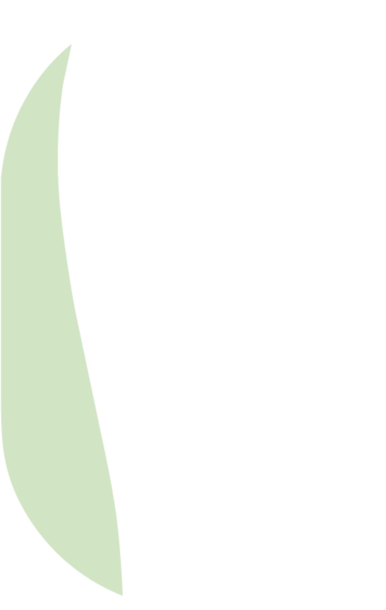

IL PECCATOORIGINALE
GLUTEN-FREE
×20
il proprio peso in acqua
✓ struttura
✓ lavorabilità
✗ compromettere il risultato
la ricetta variequilibrata
R&S · Ricerca e Sviluppo
STUDIO · PANE SENZA GLUTINE
SU 100 g DI MISCELA
7 g fibra di mela
+ 4 g HPMC
HPMC · idrossipropilmetilcellulosa, un derivato della cellulosa che fa da addensante
VOLUME SPECIFICO
3,97cm³/g
DUREZZA DELLA MOLLICA
2,10N · morbida
TRADOTTO:
✓ più fibra
✓ mollica morbida
far funzionarel'intera formulazione
nuovi approccialla formulazione
ONLINE
GRATUITO
9–12 NOVEMBRE2026
E se il peccato originale
dell'umanità fosse proprio
ciò di cui l'innovazione ha bisogno?
Nel gluten-free una mela
può cambiare il comportamento di un intero impasto.
Alcune fibre di mela possono legare
almeno 20 volte il proprio peso in acqua.
Una proprietà enorme
che può migliorare struttura, lavorabilità,
oppure compromettere completamente
il risultato se la ricetta non viene riequilibrata.
di chi lavora in ricerca e sviluppo dell'industria alimentare.
Ad esempio, in uno studio sul pane senza glutine,
una formulazione con 7 grammi di fibra di mela
e 4 grammi di HPMC ogni 100 grammi di miscela
ha raggiunto un volume specifico
di 3,97 cm³ per grammo
e una durezza della mollica
di appena 2,10 newton.
Tradotto.
Più fibra, ma con una mollica sviluppata e morbida.
Consiste nel far funzionare l'intera formulazione.
Scopri questi nuovi approcci alla formulazione
Il festival sarà online e gratuito
dal 9 al 12 novembre 2026.

Festival dell'InnovazioneAgroalimentare